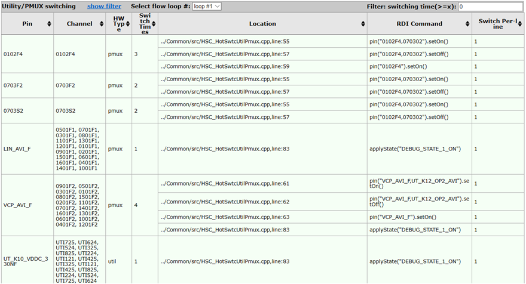
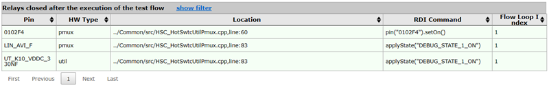
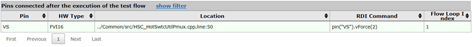

General criteria check report
This report shows the three criteria checked by the release checker.
Only selected criterion in the Preferences page are checked and the corresponding risks are reported.
UTIL/PMUX switching times
This table shows the pins whose relay has been switched during the execution of the testflow.

- Pin
- The pin whose relay has been switched.
- Channel
- The channels to which the pin is connected.
- HW Type
- The type of the card, including PMUX and utility card (UTIL).
- Switch Times
- The times of the relay switching of the pin.
- Location
- The specific location of the reported switching events in the source code, including the test method file name and the line number.
- RDI Command
- The specific code which defines the switching events.
- Switch Per-line
- The number of switching events which occurs for the corresponding code.
At the top of the table, you can select the testflow loop or input the relay switching time number to filter the items in the table.
UTIL/PMUX open issue at the end of testflow
This table displays the pins whose relay is still on after the execution of the testflow.

- Pin
- The pin whose relay is still on after the execution of the testflow.
- HW Type
- The type of the card, including PMUX and utility card (UTIL).
- Location
- The specific location of the relay definition in the source code, including the test method file name and the line number.
- RDI Command
- The specific code which defines the relay status.
- Flow Loop Index
- The index number of the testflow loop in which the relay issue is detected.
Instruments connection issue at the end of testflow
This table displays the pins which is still connected after the execution of the testflow.

- Pin
- The pin which is connected after the execution of the testflow.
- HW Type
- The type of the card.
- Location
- The specific location of the pin connection definition in the source code, including the test method file name and the line number.
- RDI Command
- The specific code which defines the pin connection.
- Flow Loop Index
- The index number of the testflow loop in which the connection issue is detected.
You can filter the tables by entering text in the fields below the column header; after you press Return, only rows will be displayed in which the column contains the filter value.
To show and hide the filters, respectively, click the Show Filter and Hide Filter links in the table title.
You can sort the table by clicking the upward-pointing and downward-pointing triangles in the column titles.
If more than one page of results was found, you can browse the pages using the controls below the table.
Functional changes
- Introduced in SmarTest 7.10.2